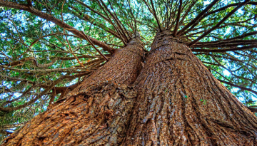

Bienvenido a Plant Crossing, página dedicada a compartir información sobre los diferentes tipos de plantas existentes.

La flora silvestre se refiere al conjunto de plantas y especies vegetales que existen en los bosques, diferenciándose de las demás por su aspecto físico, propiedades y características.
Los abedules son árboles de montaña que forman bosques claros y abiertos, que prosperan también en terrenos afectados por aludes o corrimientos de terreno.

El abeto puede alcanzar, en condiciones favorables, 500 o 600 años y puede tener más de 60 m de alto, inclusive una especie puede alcanzar los 100 m.

Estos árboles son columnados, y pueden alcanzar alturas increíbles, de 30 a 80 metros.

El árbol de arce es uno de los que más llaman la atención: sus hojas palmeadas son muy decorativas durante todo el año, pero sobretodo en otoño que es cuando cambian de color volviéndose rojas, anaranjadas, amarillas o púrpuras.

Los carex son unas gramíneas que no necesitan de un gran mantenimiento. Crecen muy rápidamente, y en cualquier rincón, por lo que son muy recomendables como »plantas para rellenar» esos huecos que han quedado vacíos en los jardines.

El árbol de caucho se caracteriza por tener una altura de 20 a 30 cm de largo. El tronco de la especie es recto y de forma cilíndrica. Además tiene 30 a 60 centímetros de diámetro, conocido por su madera blanca y liviana.


Generalmente la madera de cedro es ligera, fácil de trabajar, de tonalidades rojizas y posee una fragancia característica. Estas son características generales de la especie, sin embargo, debemos considerar que bajo el nombre de cedro se hace referencia a varias subespecies, cada una de ellas con sus particularidades.
Todos los encinos producen bellotas. Eso los caracteriza. La bellota es una estructura que consta de dos partes: una nuez, que es la semilla; y una especie de copita que la cubre por arriba, que se llama cúpula.
Esta planta produce unos frutos o bayas, mejor conocidas como bayas de enebro, cuya aparición se da luego de 3 años de haberse sembrado el arbusto.


Se trata de un árbol que alcanza 5-12 metros de altura, si bien algunos adquieren unos 15 metros. El tronco es estrecho con una corteza de pálido color gris.

Es uno de los protagonistas más importantes de la estación otoñal, ya que sus hojas se tiñen de colores rojos o anaranjados según la variedad.
Con una altura de 40 metros, crece verticalmente si está en grupos, o bien ramifica a muy temprana edad si se encuentra aislado.

Los helechos son plantas vasculares carentes de flores, frutos y semillas. Se reproducen a través de esporas, las cuales están ubicadas en esporangios o soros presentes en el envés de las hojas.

Nombre de diversas especies de plantas, de largos tallos sarmentosos que suelen encaramarse a los árboles, en busca de la luz, hasta alcanzar la copa, donde extienden sus hojas y abren sus flores.

Los musgos se forman en grandes extensiones de biomasa, en algunos casos en forma de alfombra o colchón, con una gran capacidad de retener agua a través de la capilaridad, capacidad que se extiende por toda la planta, en su superficie, a cada oportunidad de lluvia

Las hojas son simples, ovales y acuminadas, de aspecto coriáceo y disposición alterna; emiten un suave aroma y su sabor es agradable; al ser arrancadas de la planta exudan una sustancia gomosa; muchos mamíferos de las regiones donde abunda el Palo Rosa se alimentan de ellas.

Son árboles entre 20 y 60 metros con porte piramidal, hojas aisladas, planas o tetragonales puntiagudas y estróbilos colgantes que no se disgregan hasta madurar.


Es una especie arbórea que puede alcanzar una altura de 50 metros y un diámetro de 1 metro. Se localiza las zonas de vida “Bosque Muy Húmedo Montano Subtropical”
son coníferas que poseen canales de resina en la madera y las hojas, sus hojas son lineales o como agujas en general, monoicos, los conos con complejos dispuestos en espiral y aplanados y como brácteas, las brácteas libres de la escama, dos óvulos invertidos, y semillas con un ala larga terminal.
El pino es una conífera con una copa que puede ser piramidal o redondeada, especialmente de joven, y ancha cuando es adulto. Las hojas, llamadas acículas, son lineales, de color verde. Los conos por lo general son alargados, con escamas, y contienen semillas aladas.

Son los árboles que pueden alcanzar mayor altura en el planeta y poseen una gran longevidad (2.000 y 3.000 años).